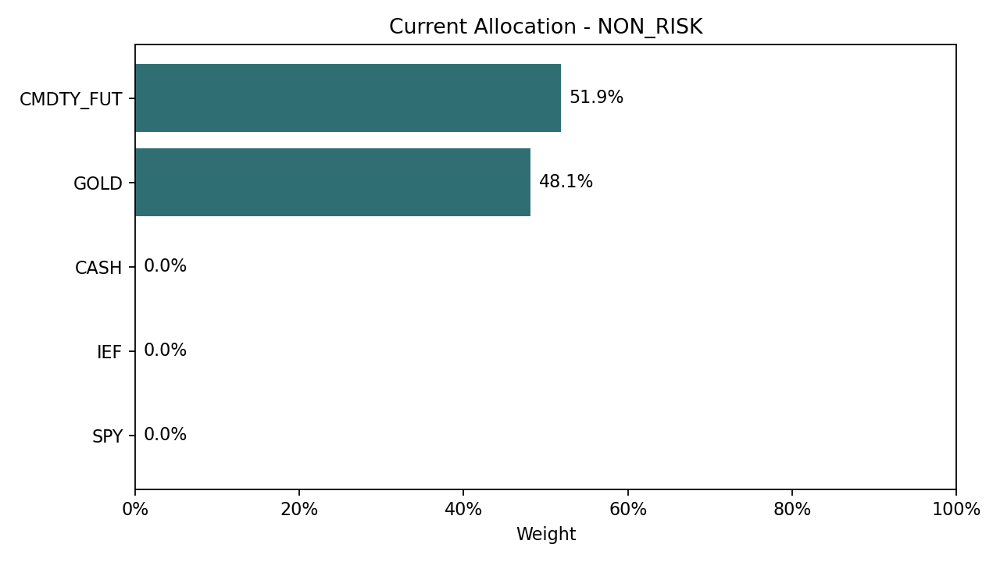
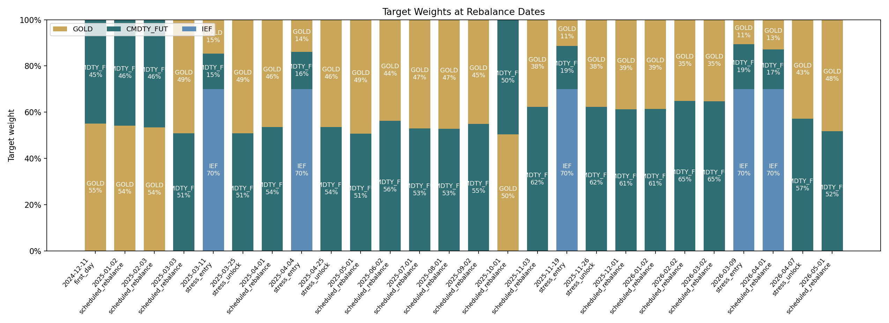
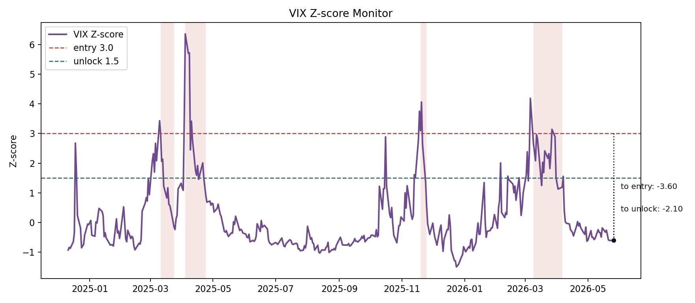
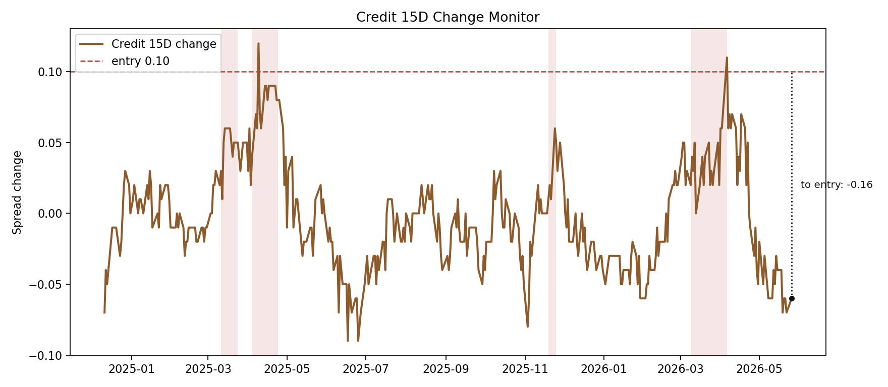
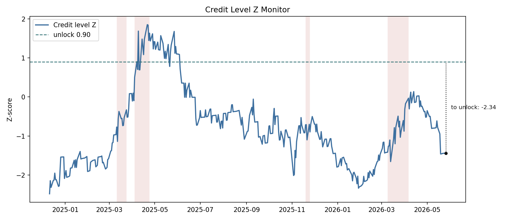
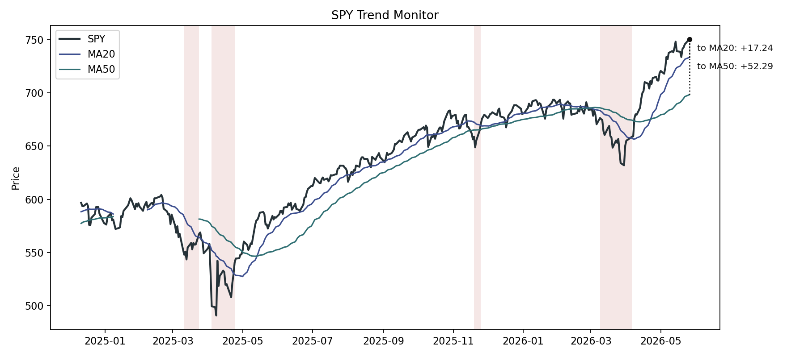
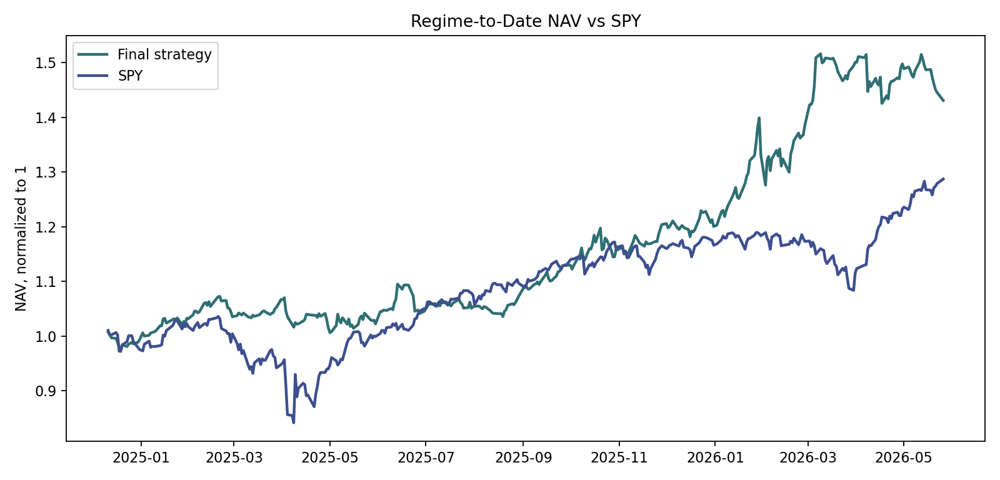
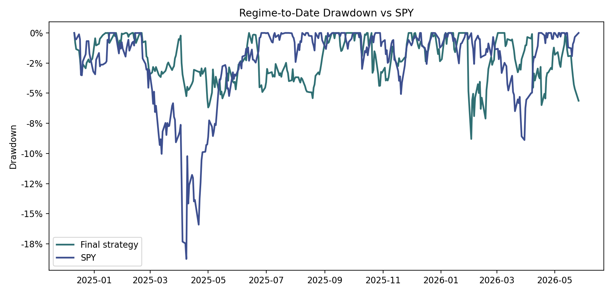
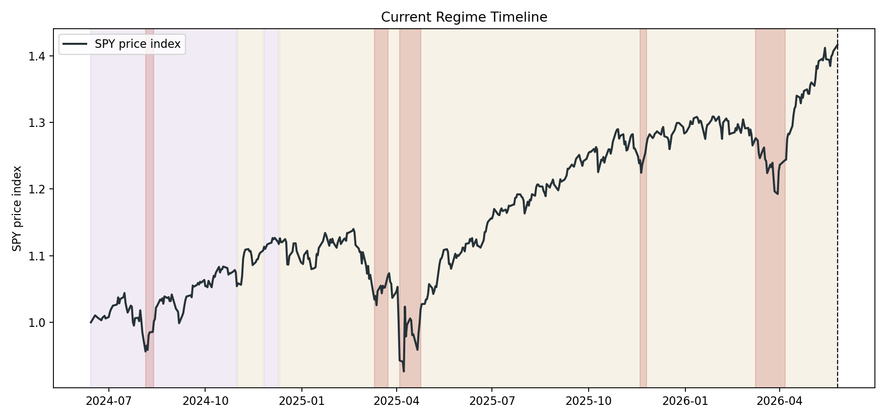

Current State
Latest data date
2026-05-26
Macro regime
FLAT_HIGH_RATE
Stress state
NON_RISK
Active locks
None
Regime start
2024-12-11
Days in regime
531
Allocation
GOLD 48.15%, CMDTY_FUT 51.85%
Strategy vs SPY RTD
43.06% vs 28.71%
Current DD vs SPY
-5.63% vs 0.00%
Current Regime Interpretation
Economic Meaning
A flat curve with high long rates reflects elevated rate pressure while the curve is not steep enough to signal a broad pro-growth steep regime.
Typical Risk
Equity beta can be vulnerable if high rates tighten financial conditions or credit spreads widen.
Preferred Assets
The final strategy emphasizes gold and commodity futures in the normal state.
Stress Behavior
Stress shifts toward a 70% IEF sleeve plus 30% gold/commodity inverse-vol exposure.
Monitoring Focus
Watch the term spread boundary near STEEP, credit spread changes, and VIX shocks.
- FLAT_HIGH_RATE: A flat curve with high long rates reflects elevated rate pressure while the curve is not steep enough to signal a broad pro-growth steep regime.
- Stress state is NON_RISK; active locks are none.
- The largest sleeve is CMDTY_FUT; the displayed target weights come directly from the final allocation rule.
- The closest monitored signal is SPY drawdown from previous high (drawdown monitor), currently above drawdown monitor.
- Regime-to-date, the strategy has outperformed SPY.
Current Allocation

| date | state | asset | weight | allocation_method | realized_vol | inverse_vol_raw_weight | reason |
|---|---|---|---|---|---|---|---|
| 2026-05-26 | FLAT_HIGH_RATE_NORMAL | SPY | 0.00% | inverse_vol_monthly_hold | 0.14 | normal allocation for FLAT_HIGH_RATE | |
| 2026-05-26 | FLAT_HIGH_RATE_NORMAL | GOLD | 48.15% | inverse_vol_monthly_hold | 0.36 | 49.82% | normal allocation for FLAT_HIGH_RATE |
| 2026-05-26 | FLAT_HIGH_RATE_NORMAL | CMDTY_FUT | 51.85% | inverse_vol_monthly_hold | 0.36 | 50.18% | normal allocation for FLAT_HIGH_RATE |
| 2026-05-26 | FLAT_HIGH_RATE_NORMAL | IEF | 0.00% | inverse_vol_monthly_hold | 0.05 | normal allocation for FLAT_HIGH_RATE | |
| 2026-05-26 | FLAT_HIGH_RATE_NORMAL | CASH | 0.00% | inverse_vol_monthly_hold | 0.00 | cash sleeve uses FRED 3-month T-bill daily accrual (DTB3, or TB3MS fallback) |
The current state is FLAT_HIGH_RATE_NORMAL. Under this state, the final strategy target allocation is GOLD / CMDTY_FUT. The current weights are generated by the final allocation rule and held until the next scheduled or state-driven rebalance. Weights are based on realized volatility over the final strategy lookback window.
Dynamic Weights Since Current Regime Start
This chart shows how target weights evolved during the current regime. Vertical markers indicate rebalance dates.

| date | rebalance_reason | previous_state | new_state | previous_weights_summary | new_weights_summary | active_locks |
|---|---|---|---|---|---|---|
| 2026-05-01 | scheduled_rebalance | FLAT_HIGH_RATE_NORMAL | FLAT_HIGH_RATE_NORMAL | GOLD 42.86%, CMDTY_FUT 57.14% | GOLD 48.15%, CMDTY_FUT 51.85% | |
| 2026-04-07 | stress_unlock | FLAT_HIGH_RATE_STRESS | FLAT_HIGH_RATE_NORMAL | GOLD 12.86%, CMDTY_FUT 17.14%, IEF 70.00% | GOLD 42.86%, CMDTY_FUT 57.14% | |
| 2026-04-01 | scheduled_rebalance | FLAT_HIGH_RATE_STRESS | FLAT_HIGH_RATE_STRESS | GOLD 10.57%, CMDTY_FUT 19.43%, IEF 70.00% | GOLD 12.86%, CMDTY_FUT 17.14%, IEF 70.00% | VIX |
| 2026-03-09 | stress_entry | FLAT_HIGH_RATE_NORMAL | FLAT_HIGH_RATE_STRESS | GOLD 35.22%, CMDTY_FUT 64.78% | GOLD 10.57%, CMDTY_FUT 19.43%, IEF 70.00% | VIX |
| 2026-03-02 | scheduled_rebalance | FLAT_HIGH_RATE_NORMAL | FLAT_HIGH_RATE_NORMAL | GOLD 35.18%, CMDTY_FUT 64.82% | GOLD 35.22%, CMDTY_FUT 64.78% | |
| 2026-02-02 | scheduled_rebalance | FLAT_HIGH_RATE_NORMAL | FLAT_HIGH_RATE_NORMAL | GOLD 38.58%, CMDTY_FUT 61.42% | GOLD 35.18%, CMDTY_FUT 64.82% | |
| 2026-01-02 | scheduled_rebalance | FLAT_HIGH_RATE_NORMAL | FLAT_HIGH_RATE_NORMAL | GOLD 38.69%, CMDTY_FUT 61.31% | GOLD 38.58%, CMDTY_FUT 61.42% | |
| 2025-12-01 | scheduled_rebalance | FLAT_HIGH_RATE_NORMAL | FLAT_HIGH_RATE_NORMAL | GOLD 37.72%, CMDTY_FUT 62.28% | GOLD 38.69%, CMDTY_FUT 61.31% | |
| 2025-11-26 | stress_unlock | FLAT_HIGH_RATE_STRESS | FLAT_HIGH_RATE_NORMAL | GOLD 11.32%, CMDTY_FUT 18.68%, IEF 70.00% | GOLD 37.72%, CMDTY_FUT 62.28% | |
| 2025-11-19 | stress_entry | FLAT_HIGH_RATE_NORMAL | FLAT_HIGH_RATE_STRESS | GOLD 37.72%, CMDTY_FUT 62.28% | GOLD 11.32%, CMDTY_FUT 18.68%, IEF 70.00% | VIX |
Signal Distance




| category | signal | current_value | threshold_value | distance | status | interpretation |
|---|---|---|---|---|---|---|
| VIX | VIX Z-score | -0.60 | 3.00 | -3.60 | below entry | VIX stress entry is active at or above 3.0 z-score. |
| VIX | VIX Z-score | -0.60 | 1.50 | -2.10 | unlock condition met | VIX lock unlock also requires SPY above MA20. |
| Credit | Credit 15D change | -0.06 | 0.10 | -0.16 | below entry | Credit lock entry also requires SPY below MA20. |
| Credit | Credit level Z | -1.44 | 0.90 | -2.34 | unlock condition met | Credit unlock also requires SPY above MA50. |
| SPY trend | SPY vs MA20 | 750.59 | 733.36 | 17.24 | above MA20 | Positive distance means SPY is above MA20. |
| SPY trend | SPY vs MA50 | 750.59 | 698.30 | 52.29 | above MA50 | Positive distance means SPY is above MA50. |
| SPY trend | SPY drawdown from previous high | 0.00 | -0.05 | 0.05 | above drawdown monitor | Drawdown is monitored as context for risk stress. |
| Regime variables | Term spread boundary | 0.70 | 1.00 | -0.30 | FLAT/INVERTED side | Above 1.0 is raw STEEP; below 0 is raw INVERTED. |
| Regime variables | Nearest regime boundary | 0.70 | 1.00 | -0.30 | away from boundary | Current regime is FLAT_HIGH_RATE; nearest boundary is term spread flat/steep boundary. |
Regime-to-Date Performance


| date | strategy_return | spy_return | strategy_nav | spy_nav | strategy_drawdown | spy_drawdown |
|---|---|---|---|---|---|---|
| 2026-05-08 | +0.77% | +0.83% | 1.48 | 1.2649 | -2.08% | 0.00% |
| 2026-05-11 | +1.14% | +0.23% | 1.50 | 1.2678 | -0.96% | 0.00% |
| 2026-05-12 | +0.89% | -0.15% | 1.51 | 1.2659 | -0.08% | -0.15% |
| 2026-05-13 | -0.55% | +0.56% | 1.51 | 1.2729 | -0.63% | 0.00% |
| 2026-05-14 | -0.82% | +0.79% | 1.49 | 1.2830 | -1.45% | 0.00% |
| 2026-05-15 | -0.49% | -1.20% | 1.49 | 1.2676 | -1.93% | -1.20% |
| 2026-05-18 | +0.04% | -0.07% | 1.49 | 1.2667 | -1.90% | -1.27% |
| 2026-05-19 | -0.95% | -0.67% | 1.47 | 1.2582 | -2.82% | -1.93% |
| 2026-05-20 | -0.80% | +1.02% | 1.46 | 1.2711 | -3.60% | -0.92% |
| 2026-05-21 | -0.70% | +0.20% | 1.45 | 1.2736 | -4.28% | -0.73% |
| 2026-05-22 | -0.37% | +0.39% | 1.45 | 1.2786 | -4.64% | -0.34% |
| 2026-05-26 | -1.03% | +0.66% | 1.43 | 1.2871 | -5.63% | 0.00% |
Regime Timeline

Stress Episodes
| episode_id | start_date | end_date | active_trigger | duration_days | SPY_return | strategy_return | CASH_return | SPY_max_drawdown | strategy_max_drawdown | avoided_drawdown_estimate |
|---|---|---|---|---|---|---|---|---|---|---|
| 1 | 2025-03-11 | 2025-03-24 | VIX | 10 | +2.72% | +0.42% | +0.16% | -1.33% | -0.65% | -0.68% |
| 2 | 2025-04-04 | 2025-04-24 | CREDIT+VIX | 14 | +1.86% | -0.45% | +0.23% | -6.33% | -1.87% | -4.46% |
| 3 | 2025-11-19 | 2025-11-25 | VIX | 5 | +2.26% | +0.04% | +0.07% | -1.52% | -0.02% | -1.51% |
| 4 | 2026-03-09 | 2026-04-06 | VIX | 20 | -1.73% | +0.00% | +0.28% | -6.57% | -3.26% | -3.31% |
Warnings
- DTB3 latest date 2026-05-22 lags newest available data date 2026-05-26.
- DBAA latest date 2026-05-21 lags newest available data date 2026-05-26.
- DAAA latest date 2026-05-21 lags newest available data date 2026-05-26.
- DGS10 latest date 2026-05-22 lags newest available data date 2026-05-26.
- DGS1 latest date 2026-05-22 lags newest available data date 2026-05-26.
- CASH latest date 2026-05-22 lags newest available data date 2026-05-26.
- VIXCLS latest date 2026-05-25 is earlier than SPY 2026-05-26; using common strategy panel date 2026-05-26.
All Regime Interpretations
FLAT_LOW_RATE
- Economic Meaning: A flat curve with low long rates usually points to subdued nominal growth expectations and limited rate pressure.
- Typical Risk: The main risk is that defensive rate-sensitive exposure can lag if growth risk fades quickly.
- Preferred Assets: The final strategy uses SPY and commodity futures in the normal state.
- Stress Behavior: Stress locks move the sleeve to cash for FLAT_LOW/MID stress states.
- Monitoring Focus: Watch VIX, credit widening, and whether the curve shifts out of the flat regime.
FLAT_MID_RATE
- Economic Meaning: A flat curve with mid-level rates is a balanced but late-cycle-looking state.
- Typical Risk: Risk assets can still work, but the flat curve leaves less cushion if credit or volatility deteriorates.
- Preferred Assets: The final strategy uses SPY and gold in the normal state.
- Stress Behavior: Stress locks move the sleeve to cash for FLAT_LOW/MID stress states.
- Monitoring Focus: Watch VIX, credit widening, and SPY trend confirmation.
FLAT_HIGH_RATE
- Economic Meaning: A flat curve with high long rates reflects elevated rate pressure while the curve is not steep enough to signal a broad pro-growth steep regime.
- Typical Risk: Equity beta can be vulnerable if high rates tighten financial conditions or credit spreads widen.
- Preferred Assets: The final strategy emphasizes gold and commodity futures in the normal state.
- Stress Behavior: Stress shifts toward a 70% IEF sleeve plus 30% gold/commodity inverse-vol exposure.
- Monitoring Focus: Watch the term spread boundary near STEEP, credit spread changes, and VIX shocks.
STEEP_LOW_RATE
- Economic Meaning: A steep curve with low long rates often reflects recovery expectations while policy remains easy.
- Typical Risk: The main risk is a failed recovery or a commodity reversal.
- Preferred Assets: The final strategy uses SPY and commodity futures in the normal state.
- Stress Behavior: If an existing stress lock carries into this state, the strategy holds SPY until unlock.
- Monitoring Focus: Watch regime persistence, SPY trend, and commodity momentum.
STEEP_MID_RATE
- Economic Meaning: A steep curve with mid-level long rates is typically the cleanest pro-growth state.
- Typical Risk: The main risk is a fast volatility or credit shock that breaks the growth trend.
- Preferred Assets: The final strategy holds SPY in the normal state.
- Stress Behavior: Stress shifts to IEF.
- Monitoring Focus: Watch credit spread changes, SPY trend, and whether rates move into the high bucket.
STEEP_HIGH_RATE
- Economic Meaning: A steep curve with high long rates can combine growth participation with inflation or rate pressure.
- Typical Risk: Equities can still participate, but rate-sensitive valuation pressure and commodity shocks matter.
- Preferred Assets: The final strategy uses 70% gold plus 30% inverse-vol SPY and commodity futures in the normal state.
- Stress Behavior: Stress shifts to IEF.
- Monitoring Focus: Watch credit widening, VIX, and whether the term spread compresses back into FLAT.
INVERTED
- Economic Meaning: An inverted curve usually reflects restrictive policy and elevated recession risk.
- Typical Risk: Equity drawdowns and credit stress can appear with a lag after inversion.
- Preferred Assets: The final strategy uses SPY and gold in the normal state.
- Stress Behavior: Stress keeps 10% cash and 90% inverse-vol SPY/gold exposure.
- Monitoring Focus: Watch credit level z-score, VIX unlock conditions, and SPY trend.